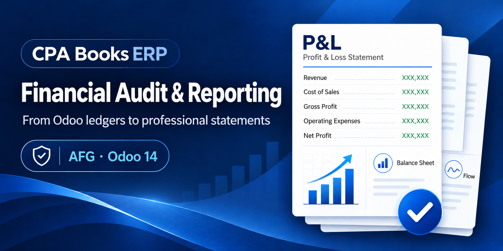
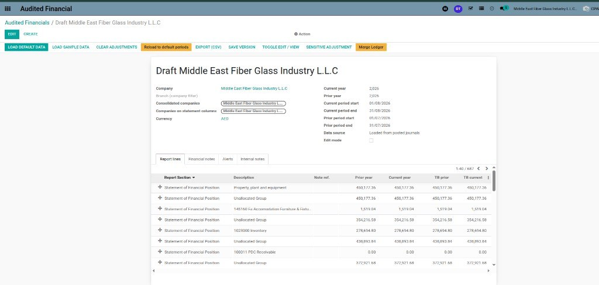
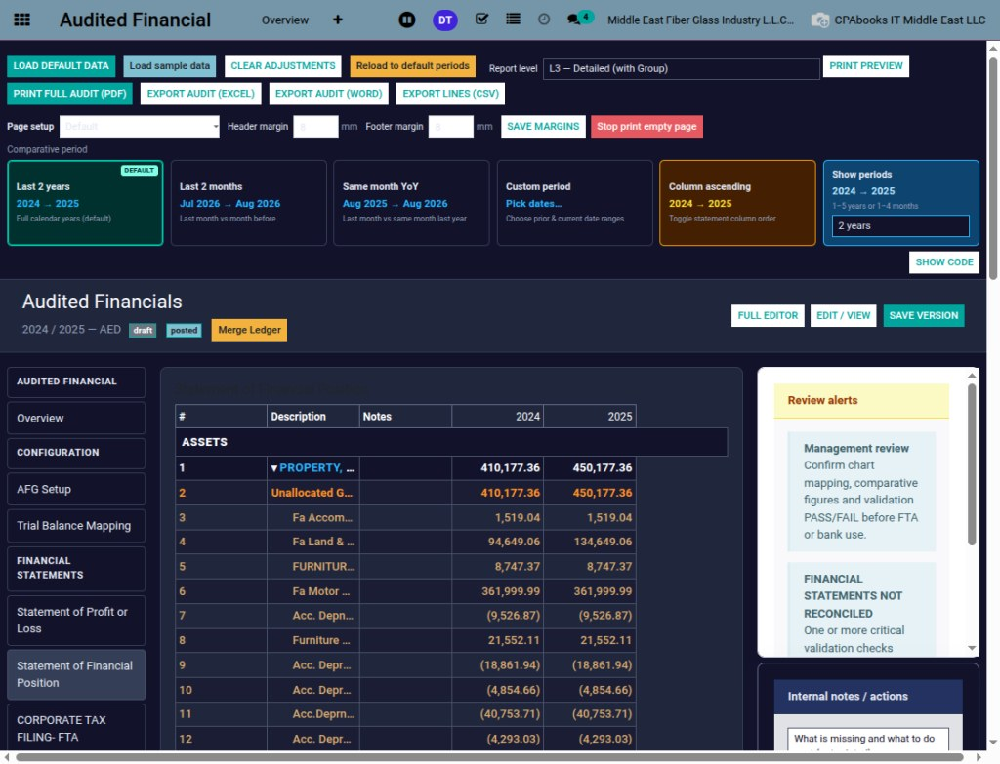
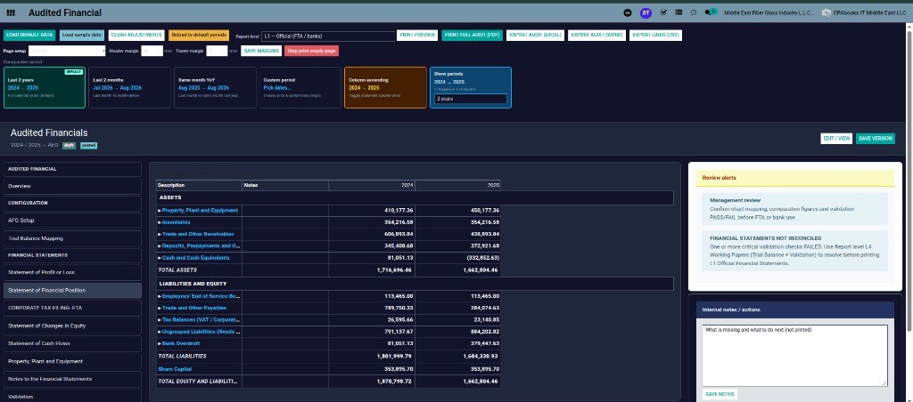

Your year-end financial statement pack, straight from your Odoo ledgers.
Profit or Loss, Financial Position, Changes in Equity, Cash Flows, PPE schedule, notes and a UAE Corporate Tax layout, built from posted journals, checked with PASS / FAIL validation, and printed in the level of detail you need.
See the pack Request a demo| Assets | 2024 | 2025 |
| Property, plant and equipment | 410,177 | 450,177 |
| Inventories | 354,217 | 354,217 |
| Trade and other receivables | 606,894 | 438,894 |
| Cash and cash equivalents | 81,051 | (332,853) |
| Total assets | 1,716,696 | 1,662,804 |

7 statement sections |
5 report levels |
25+ validation checks |
4 export formats |
AFG lays out the full set of management financial statements from the accounts you already keep in Odoo. No trial balance copied into Excel, no figures retyped into Word.
| I | Statement of Profit or Loss | P&L |
| II | Statement of Financial Position | SOFP |
| III | Statement of Changes in Equity | SOCE |
| IV | Statement of Cash Flows | CF |
| V | Property, Plant and Equipment | PPE |
| VI | Notes to the Financial Statements | Notes |
| VII | Validation & Review | Checks |
| + | Corporate Tax Filing (FTA) layout | CT |
Every line shows prior year, current year and the trial balance figure next to it, so differences stand out at a glance.

Give the bank a clean official pack, give management the type breakdown, and keep the full working papers for the accountant. Switch the level, print again.
Show 1 to 5 years or 1 to 4 months, and choose the column order.

More than 25 checks run on the pack. A critical FAIL stops the L1 official print and shows you where to fix it.
| Revenue − Expenses = Profit | PASS |
| Assets = Equity + Liabilities | PASS |
| Changes in Equity agree to SOFP and P&L | PASS |
| Closing cash agrees to Cash Flow | PASS |
| Opening balance = prior closing | PASS |
| Cash not overdrawn | WARN |
| Financial statements reconcile to TB | FAIL |

Tag each account with one of 30 CT filing categories. AFG builds the Corporate Tax view of P&L and Financial Position and prints a CT-only PDF.
| Publisher | CPA Books ERP |
| Version | Odoo 14 |
| Price | Free |
| Needs | Accounting, CPA Books ERP dashboard module |
| Exports | PDF, Excel, Word (.doc), CSV |
| Statements | P&L, SOFP, SOCE, Cash Flows, PPE, Notes, CT layout |
AFG is published for Odoo 14 today. Running Odoo 15, 16, 17, 18 or 19? We upgrade the app to your version. Message us on WhatsApp or email with your Odoo version.
WhatsApp +971 56 256 8128 info.cpabooks@gmail.com| Odoo 14.0 | Available now |
| Odoo 15.0 | Upgrade on request |
| Odoo 16.0 | Upgrade on request |
| Odoo 17.0 | Upgrade on request |
| Odoo 18.0 | Upgrade on request |
| Odoo 19.0 | Upgrade on request |
Questions, setup help or a demo? Write to us and we will get back to you.
info.cpabooks@gmail.com +971 56 256 8128